One container, one SQLite file. Native apps for iPhone, Android and the Mac, shared lists for everyone at home, and your to-dos right inside Home Assistant.
A todo app lives in the gaps of your day: a lock screen, a menu bar, a glance between meetings. So Yarukoto uses each platform's own controls instead of drawing look-alikes, and it ships as a real app on each one. The web app is there too, served by your server, but it isn't the thing wrapped up and called an app.
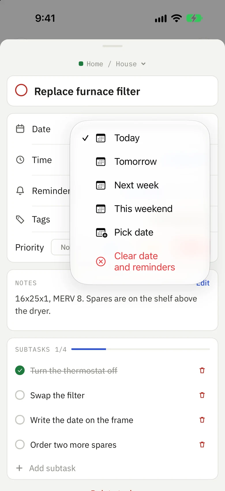
iPhone
SwiftUI menus and date pickers, and Liquid Glass buttons, from the system itself.
Mark done and Snooze on the lock screen, caught natively at launch so they work with the app closed.
Haptics, swipe actions and a native, virtualized list you can drag to reorder.
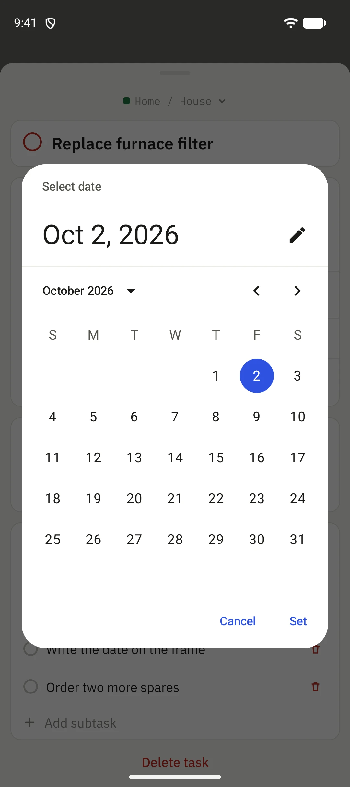
Android
Material date and time dialogs, built with Jetpack Compose rather than imitated.
Reminder actions run in a headless task, so tapping Mark done works even after the app has been swiped away.
Every tap is written to a durable queue first, so one made out of signal still lands.
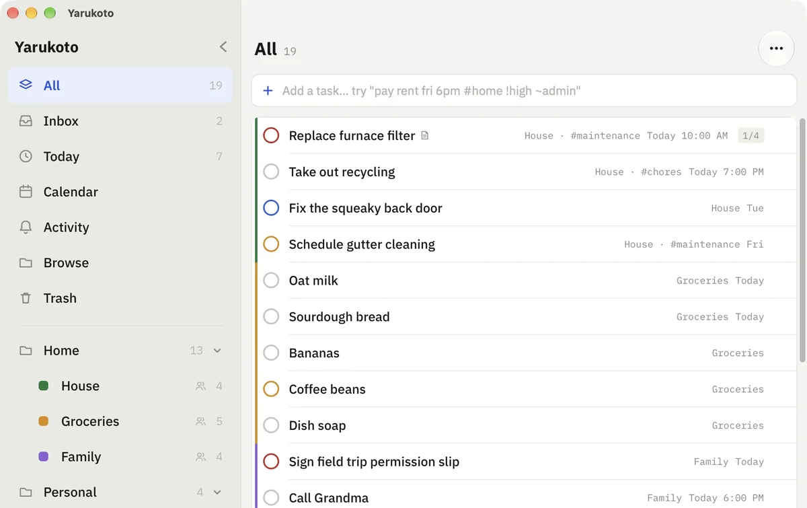
Mac
A real Mac Catalyst app with resizable panes, hover, right-click and a menu bar of its own.
Drive it from the keyboard: arrows to move, ↩ to open, ⌘K to go anywhere or do anything.
System undo, so Edit ▸ Undo reads “Undo Complete Task”. Signed and notarized builds.
Multiple people
One server for the whole household
Everyone gets their own account, their own Inbox, tags, folders and saved filters. Lists start private; share one and everyone at home can see and edit it. The groceries are shared, your work list stays yours.
Shared lists carry a people icon in the sidebar, so it's always clear who sees what.
Each device signs in on its own and can be signed out from Settings without touching the others.
Removing someone hides, never deletes. Their devices are signed out and their private lists set aside; restoring them brings it all back.
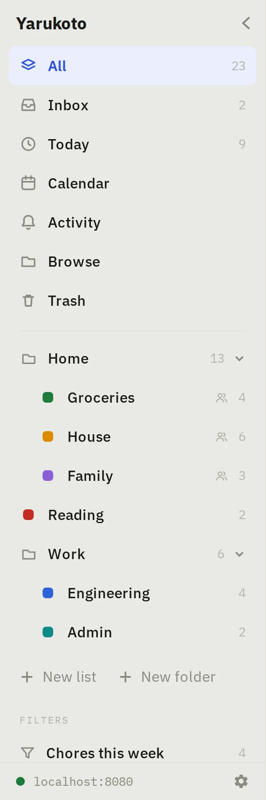
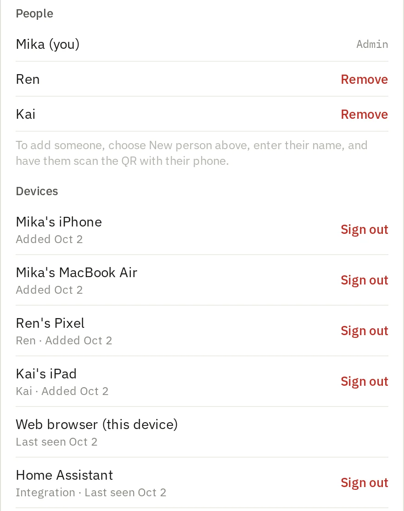
Sign-in
No passwords. Point a camera.
Signing in is a QR code, in whichever direction has a camera. Every QR also shows a short code you can type, for the devices that don't.
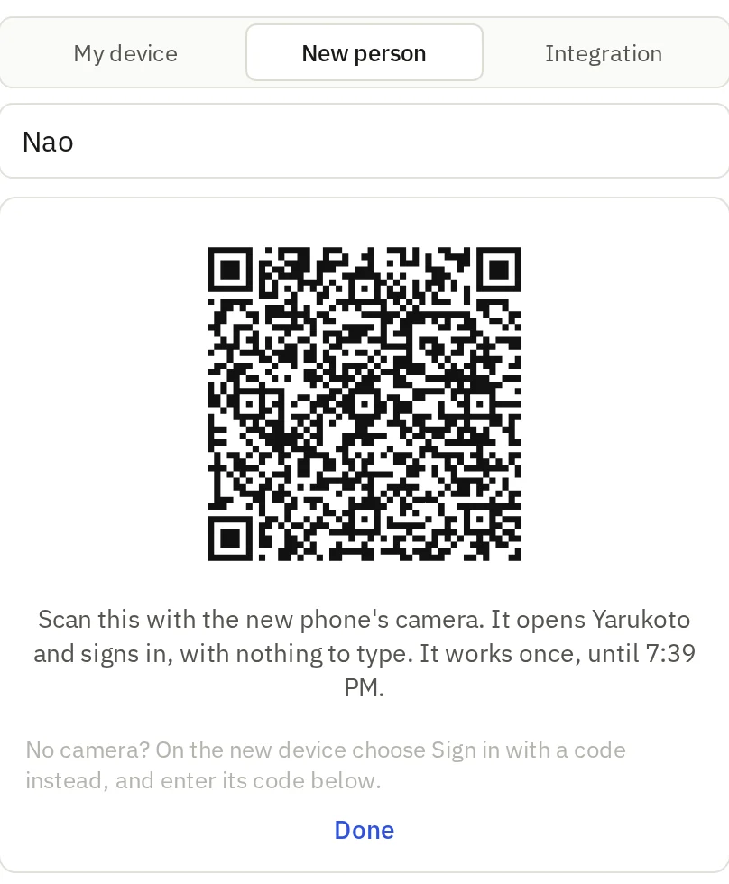
1
A new phone scans. Pick New person, type their name, and they point their camera at the QR. It opens Yarukoto already signed in, with nothing to type, and works once.
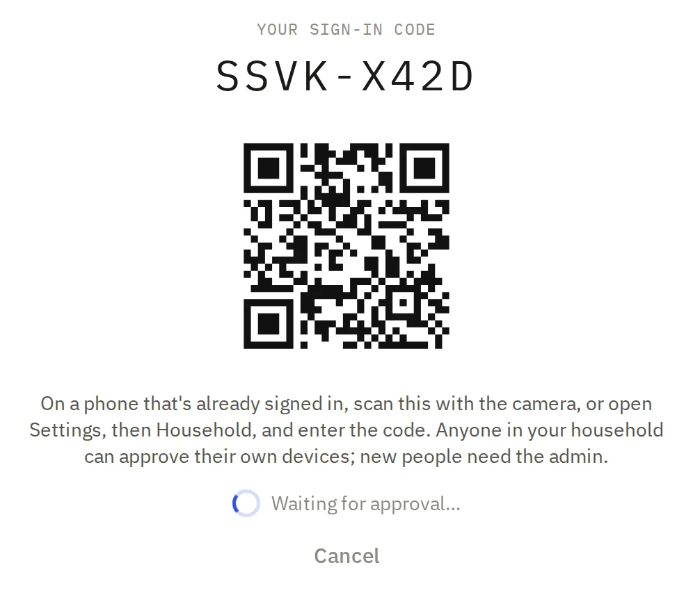
2
Or your phone scans it. A browser, a Mac or Home Assistant shows a code and a QR. Scan it with a phone that's signed in, approve, and it finishes signing in by itself.
Home Assistant
Your lists, in Home Assistant
The Yarukoto integration turns the lists you pick into Home Assistant to-do lists. Tick off the groceries from a wall tablet, add to them by voice, or build an automation around what's due today.
Lists work both ways. Add, edit, tick off and delete; it shows up in the app on the next sync.
Saved filters come along too, like everything tagged #chores this week, ready to be ticked off.
It only sees what's shared. Home Assistant gets its own household token, approved by code like any device, and never sees anyone's private lists or Inbox.
In HACS, add github.com/wyne/yarukoto as a custom repository and install Yarukoto.
Add the integration and enter your server's address.
Approve the code it shows from your phone, then pick lists and filters.
homeassistant.local:8123/todo
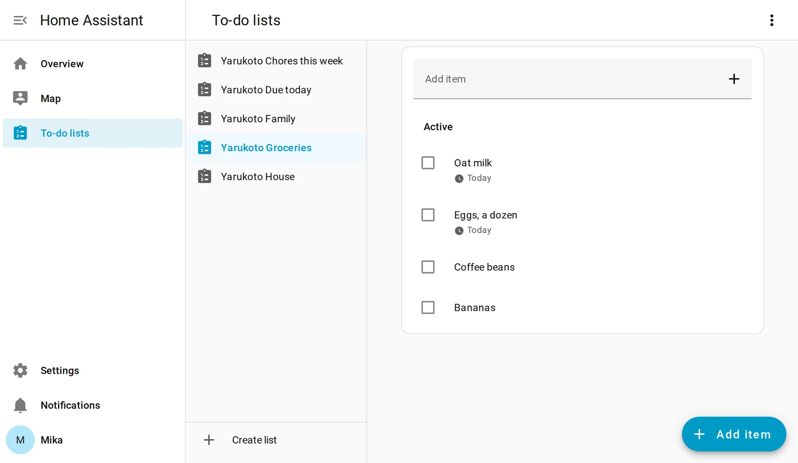
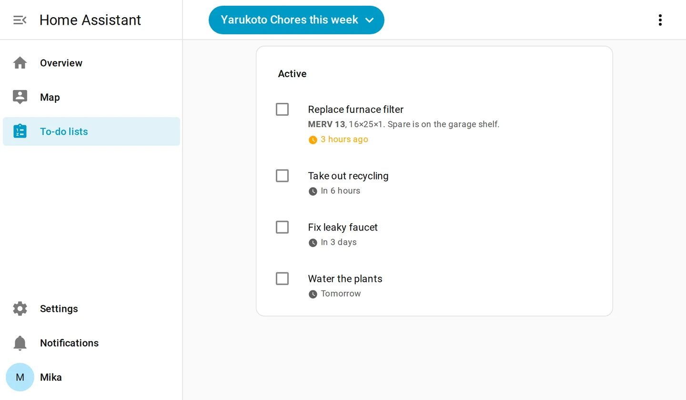
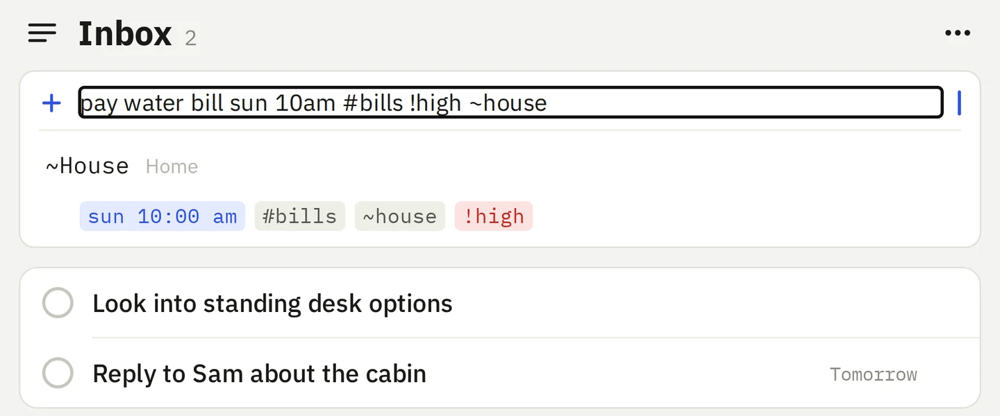
Type the task. It parses the rest.
pay rent fri 6pm#home!high~admin
The due date and time, the #tag, the !priority and the ~list come out of one line. Anything unrecognized stays as the title, and the chips show you what was understood before you commit.
Repeats in the same line: every mon, wed, every 2 weeks, or every! 3 days to count from when it's done.
Subtasks, Markdown notes, tags, priorities, due dates and times.
Reminders, with Mark done and Snooze right on the notification.
Undo for completing and trashing, and Trash you can restore from.
Views
Today, this week, or just the chores
The same tasks, cut the way you think about them. Every view is a real link, so the one you live in is a bookmark away.
yarukoto.local:8080/today
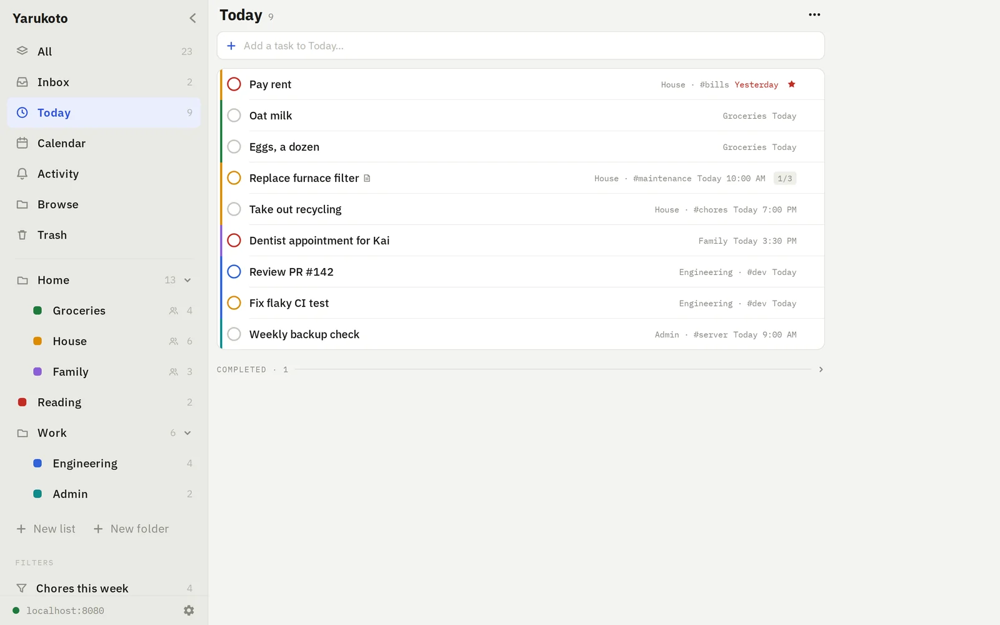
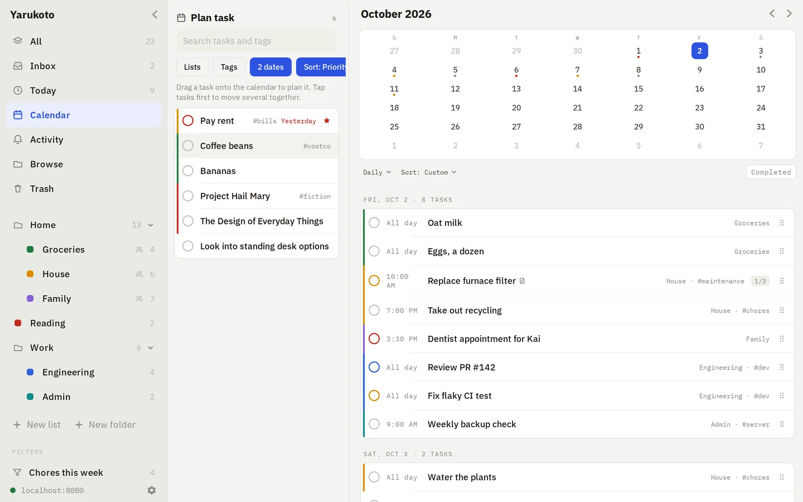
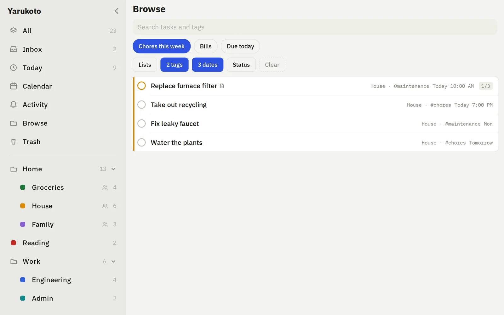
What's due now, with the overdue on top and the finished folded away.
AI assistants
Ask Claude what's due
The server speaks the Model Context Protocol at /mcp, so Claude Code or Claude Desktop can list, add, schedule and complete your tasks. It sees exactly what your account sees, and “friday” means friday in your time zone, not the container's.
# Claude Code
claude mcp add --transport http yarukoto \
https://todo.example.com/mcp \
--header "Authorization: Bearer $YARUKOTO_TOKEN"
# then just ask› what's due today on the house list?
Install
Running in a minute
One container, ghcr.io/wyne/yarukoto, built for amd64 and arm64. Your tasks live in a single SQLite file in the folder you mount, and survive every update.
Make a folder and save this as compose.yaml in it. Set YARUKOTO_TZ to your time zone.
Generate the owner's token. It's the admin credential, so make it random.
Start it, then open http://<server>:8080.
Portainer, Dockge and Unraid's Compose Manager take the same file. To update: docker compose pull && docker compose up -d.
compose.yaml
services:
yarukoto:
image: ghcr.io/wyne/yarukoto:latest
restart: unless-stopped
ports:
- "8080:8080"
environment:
YARUKOTO_TOKEN: ${YARUKOTO_TOKEN:?set a token in .env}
YARUKOTO_TZ: America/New_York # your time zone
volumes:
- ./data:/data
In File Station, make a folder for the database, like docker/yarukoto/data.
In Container Manager → Project → Create, choose Create docker-compose.yml and paste this. The repo’s copy explains every line.
Paste a token from openssl rand -hex 32, fix the volume path if your data isn't on volume1, and set PUID/PGID to your DSM user's ids (id over SSH prints them). Start the project.
Open http://<nas-ip>:8080. If another package already has 8080, change only the left side of the port.
It pulls the prebuilt image, so the NAS never compiles anything. The NAS won't notice new versions on its own; to update, over SSH: sudo docker compose pull && sudo docker compose up -d.
Open the server in a browser or the app and use the token once. That account is the household's admin.
2
Bring in the household
Settings → Household → New person shows a QR. Each phone scans it and is signed in. No more tokens.
3
Add HTTPS for outside
Fine as plain HTTP at home. Before it faces the internet, put Caddy, Traefik or your NAS's reverse proxy in front.
4
Back up the snapshots
The server writes a snapshot to data/backups every day and keeps the newest seven. Point Restic, Hyper Backup or whatever you use at that folder. More on backups.